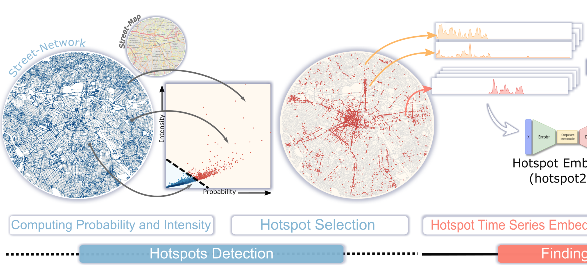

Baltimore City Crime Visulization
Literature Survey
This research paper mainly focuses on analyzing the crimes based on Probability vs Intensity.
We found this paper interesting because they classified hotspots based on probability vs intensity, which is a different method.
After categorizing the hot spots, they have presented that on a Geospatial map where these visualizations may be helpful to solve real-world problems.
Taking this as inspiration, we want to use these concepts for our data set and analyze the crimes in Baltimore city from 2012 to 2017.
CriPAV: Street-Level Crime Patterns Analysis and Visualization

EXPLANATION OF DATASET
There are 10 attributes in our data set. There are many Neighborhoods, its district, where type of crime is description. Each crime has a unique crime code, the year of occurring, weapon used, Longitude, Latitude, Impact nothing but probability and the intensity of the crime.
Data Set Source
Data processing
We have done the data preprocessing to find out the Probability and intensity.
The probability and the intensity is calculated by using Pandas where, we selected a location and calculated the probability of all crimes then we picked the crime which has most intensity. Like wise, the probability is calculated for all the locations from 2012 to 2017. The formula we used to calculate the probability is max(crime)/total number of crime at a specific location.
As we are showing the data for a specific year we divided the data set into year wise by ignoring the day and month.